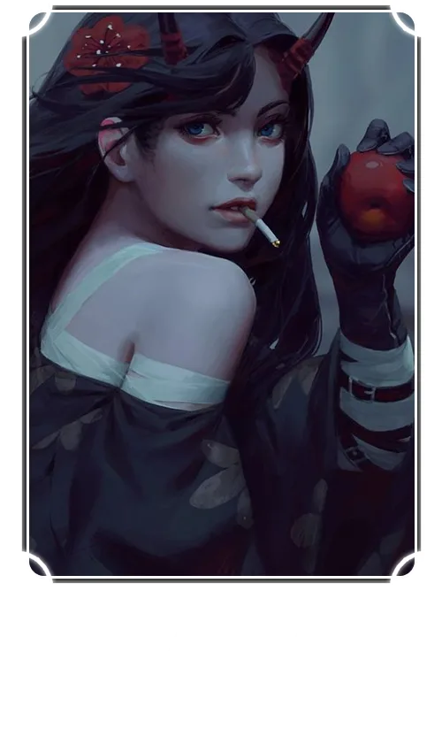

Kana (Ка́на) - ценитель эстетики тёмного фэнтези. Мечтает стать чародейкой или ведьмой.
Основная сфера деятельности - озвучивание анимационных сериалов и фильмов, видеоигр и визуальных новелл.
Благодаря своей высокой эмпатии, Кана тонко чувствует характер и настроение каждого персонажа. Это помогает ей передавать эмоции и образы героев максимально близко к задумке автора.
Актриса обладает широким диапазоном голоса, поэтому вы можете услышать её на самых разных персонажах в работах нашего проекта.
Помимо озвучки, Кана отвечает за многие организационные процессы в EVA и генерирует контент для соц.сетей. Все наши посты выходят из-под её пера, и не только они.
В свободное время занимается вокалом, любит посещать интересные мероприятия и играть в настолки с друзьями.
Интересный факт: Кана настоящая кофеманка! Может выпить от 3 до 7 чашек кофе в день.
Озвучивала роли:
Биско-Ржавоед - Пау, второстепенные персонажи.
Сасаки и Мияно - второстепенные персонажи.
Убивающая Любовь - Шато Данкуорд, второстепенные персонажи.